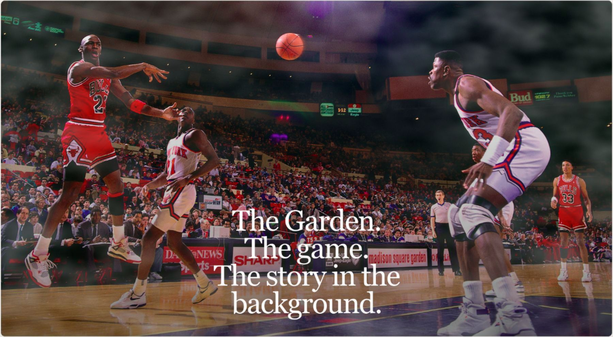
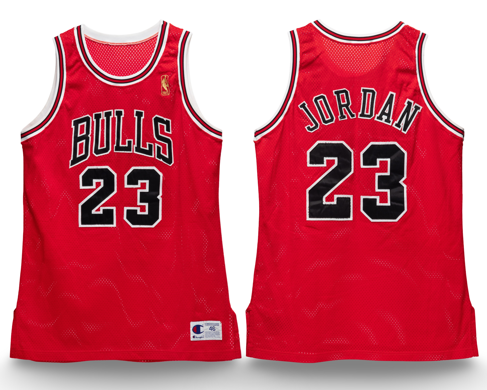

Much like a celebrated actor whose career is defined by memorable performances, certain Michael Jordan jerseys have developed remarkable résumés of their own. Some are remembered for a single iconic appearance, while others have been featured repeatedly on magazine covers, trading cards, posters, and promotional photographs. And just as not every starring role carries the same distinction, the significance of these appearances varies. For some jerseys, one unforgettable image may be more meaningful than dozens of lesser-known publications.
Viewed together, these appearances form something like a filmography: a record of the images through which a jersey became familiar to the public. The number of appearances tells only part of the story. Their importance—and the memories they carry—helps shape the garment’s identity.
Imagine owning Michael Jordan’s rookie road jersey featured on the December 10, 1984 Sports Illustrated cover, “A Star Is Born,” or the very jersey captured in the photograph used for his legendary 1986–87 Fleer #57 rookie card. The title of this article takes its cue from that famous cover: a star is born, and a star is worn.
For those who grew up collecting Jordan memorabilia, these images hold a special significance. What was once admired on a magazine cover or treasured trading card becomes something tangible. Owning the actual garment featured in a photograph recognized by millions creates a connection that extends far beyond the basketball court.
Photo-matching establishes the relationship between the surviving garment and the published image. From Jordan’s collegiate years at North Carolina to his return with the Washington Wizards, the examples documented here show how those connections have helped make certain jerseys among the most coveted artifacts in the hobby.


Introductory images illustrate collector appeal; they do not claim that these specific jerseys have been conclusively photo-matched.
01 / The image and the artifact
1982 | University of North Carolina — Road Jersey

View this jersey in the Archive →
The earliest photo-matched jersey documented in the Archive dates to Jordan's collegiate career at the University of North Carolina.

The jersey was previously photo-matched to the March 28, 1983 issue of The Sporting News, which featured Jordan on its cover.
Additional research by the Archive has since established a conclusive match to North Carolina's March 5, 1983 game against Duke.
The Sporting News cover represents an early media appearance of the surviving jersey, connecting the garment to a published image from Jordan's collegiate years, before his emergence as an international basketball icon.
02 / The image and the artifact
1984 | Team USA — Alternate Jersey

View this jersey in the Archive →
Jordan wore this alternate Team USA jersey throughout the 1984 Olympics. In preparation for the Games, Team USA played a series of exhibition games against NBA All-Star teams across the country.
On July 25, 1984, Team USA faced an NBA All-Star team in its final tune-up before the Olympics.
A photograph from that game was subsequently used on Jordan's 1984 Star trading card [insert card number], as well as multiple Star cards released between 1984 and 1986.
The jersey is also photo-matched to an image featured in the May 1991 issue of Beckett Basketball magazine.
These appearances connect the surviving jersey to publications spanning several years, beginning with some of Jordan's earliest trading cards.


03 / The image and the artifact
1984–85 | Chicago Bulls — Announcement and Air Jordan
Promotional Jersey

View this jersey in the Archive →
One of the earliest Chicago Bulls jerseys documented in the Archive is connected to two significant moments at the beginning of Michael Jordan's professional career.

The jersey appears in the famous schoolyard photograph of Jordan holding an Air Jordan I sneaker over his shoulder, an early promotional image associated with the introduction of his first signature Nike shoe.
The same jersey is also photo-matched to a photograph of Jordan holding his Chicago Bulls uniform at a microphone stand during his official introduction to the team.
Although never worn during NBA competition, the jersey's appearance in these photographs connects it to both Jordan's arrival in Chicago and the emergence of the Air Jordan brand.
Few promotional jerseys can be associated with such recognizable imagery from the earliest stages of Jordan's professional career.

04 / The image and the artifact
1984–85 | Chicago Bulls — January 1985 HOOP Magazine Jersey

View this jersey in the Archive →
A separate 1984–85 Chicago Bulls home jersey was featured on the January 1985 cover of HOOP Magazine.
Issued during Jordan's rookie season, the jersey was used in promotional photography rather than NBA game competition.
Its appearance on the magazine cover provides another early connection between a surviving Bulls uniform and the promotional imagery surrounding Jordan's introduction to the NBA.

Additional jersey photograph - for review

05 / The image and the artifact
1985–86 | Chicago Bulls — Inside Sports Road Jersey

View this jersey in the Archive →
Featured on the November 1985 cover of Inside Sports, this road jersey captures an important transition in Chicago's uniform design: from cursive “Chicago” lettering to block “BULLS” across the chest.

October preseason photographs in the Archive's research show Jordan still wearing the cursive style. This helps narrow the likely date of the cover photograph toward the opening of the 1985–86 regular season, making the jersey a potentially early example of the new design worn by Jordan.
The timing raises the possibility that this was the jersey Jordan wore during the injury game that interrupted his second NBA season. That connection remains unconfirmed; establishing it would require dating the cover photograph and photo-matching the surviving jersey to that game.
Its appearance on the magazine cover gives the garment a recognizable public image, while the change in chest lettering places it at a pivotal point in Jordan's early Bulls career.
06 / The image and the artifact
1986–87 | Chicago Bulls — Home Jersey

View this jersey in the Archive →
Jordan's 1986–87 home jersey is significant for several reasons. Worn throughout his historic 37.1-point-per-game season, the jersey also marks the earliest example documented in the Archive to appear on a Sports Illustrated cover.
According to the Archive's documented research, this is its most fully photo-matched Michael Jordan uniform, with confirmed matches to 42 games during the 1986–87 regular season and playoffs, plus five preseason games — 47 confirmed game appearances in total.
The five preseason matches span both the 1986–87 preseason and the incoming 1987–88 preseason, establishing the uniform's use on either side of Jordan's historic scoring campaign.

The jersey was featured on the November 17, 1986 issue of Sports Illustrated, titled "One Man Gang."
Jordan also wore the jersey in the 1987 Partners in Excellence reading poster.
Together, these publications connect the surviving garment to two recognizable images from one of the most remarkable individual seasons in NBA history.


07 / The image and the artifact
1986–87 | Chicago Bulls — Road Jersey

View this jersey in the Archive →
Jordan's 1986–87 road jersey is connected to a wealth of imagery from the 1987 Slam Dunk Contest during NBA All-Star Weekend in Seattle.

His first Slam Dunk Contest championship marked an important early milestone in his career. Photographs from the event captured the athleticism and style that helped establish Jordan as one of basketball's most electrifying players.
For this surviving jersey, those images provide a particularly strong public identity. Two of the most recognizable photographs from the contest will illustrate its connection to the event without overwhelming the section.


08 / The image and the artifact
1988–89 | Chicago Bulls — Home Jersey

View this jersey in the Archive →
Jordan's 1988–89 home jersey appeared on two separate Sports Illustrated covers during the same calendar year.
The jersey was featured on the March 13, 1989 and November 6, 1989 issues, connecting the same surviving garment to two notable magazine appearances.
Its presence on multiple covers demonstrates how a single game-worn jersey can become associated with more than one recognizable image from Jordan's career.



The Garden.
The game.
The story in the background.
09 / The image and the artifact
1989–90 | Chicago Bulls — Road Jersey

View this jersey in the Archive →
Jordan's 1989–90 road jersey is photo-matched to a photograph used on the 1994 Upper Deck Michael Jordan Rare Air #89 trading card, featuring Jordan on the court with the Menendez brothers visible in the background.
The image later attracted attention because of the brothers' presence, giving the photograph an unusual connection to a story outside basketball.
The jersey's appearance on the trading card illustrates how the public identity of a game-worn garment can extend beyond the sporting moment originally captured in the photograph.


10 / The image and the artifact
1991 | NBA All-Star Jersey

View this jersey in the Archive →
The 1991 NBA All-Star jersey is the only photo-matched example from that event currently documented in the Archive.
The jersey appeared on multiple trading cards, including releases from NBA Hoops and Upper Deck [insert card numbers].
These appearances connect the surviving jersey to collectible images of Jordan from the 1991 All-Star Game, providing another example of the relationship between a game-worn garment and its representation in basketball trading cards.


11 / The image and the artifact
1992–93 | Chicago Bulls — Road Jersey

View this jersey in the Archive →
Jordan's 1992–93 Chicago Bulls road jersey is photo-matched to the October 18, 1993 cover of Sports Illustrated.
The magazine appearance connects the surviving jersey to another recognizable publication from the period surrounding Chicago's first three consecutive NBA championships.


12 / The image and the artifact
1996–97 | Chicago Bulls — Road Jersey

View this jersey in the Archive →
This red road jersey connects an extended period of Jordan's fifth championship season to a broad range of published imagery.
Sotheby's documents 17 MeiGray photo-matched games between December 19, 1996 and April 10, 1997, spanning five calendar months. A supplemental letter identifies three further games in which MeiGray believes the jersey was worn; those additional appearances should be distinguished from the 17 confirmed matches.

The listing also associates the garment with trading cards, framed photographs, and posters from Starline, Costacos, and Heroes of the Game. Its extended use gave photographers numerous opportunities to capture the same jersey, allowing one surviving garment to become familiar through different images and publications.
The Archive's research also connects the jersey to magazine covers. The exact cover issues and card identifications will be listed once confirmed. Sotheby's discusses the March 10, 1997 Sports Illustrated cover, but its description alone does not establish a photo-match to this specific garment.


13 / The image and the artifact
1996–97 | Chicago Bulls — Black Pinstripe Jersey

View this jersey in the Archive →
Jordan's 1996–97 black alternate pinstripe jersey appeared on numerous Upper Deck trading cards, with photographs of the garment reproduced in multiple releases over nearly a decade.
The jersey is photo-matched to images featured on the following cards:
- 1997 Upper Deck UD3 — #MJ3-1
- 1997 Upper Deck Marquee Matchups — #MM1
- 1999–00 Upper Deck Air of Greatness — #146
- 2003–04 Upper Deck Exquisite Collection Patches Triple — #MJ1
- 2004–05 Upper Deck Sweet Spot Signature Shots — #MJ
- 2005–06 Upper Deck Autographs — #MJ35

These appearances illustrate how photographs of a single game-worn jersey continued to circulate years after its original use.
For collectors, the connection is particularly interesting. The same surviving garment can be associated with multiple cards released at different points in Jordan's career and after his retirement.


14 / The image and the artifact
1996–97 | Chicago Bulls — Home Jersey

View this jersey in the Archive →
The 1996–97 Chicago Bulls home jersey documented in the Archive was featured during a memorable television segment involving longtime NBA sideline reporter Craig Sager.
During a game against the Seattle SuperSonics on [insert date], Jordan changed jerseys at the end of the third quarter, with Sager displaying the jersey during the broadcast.
The footage provides an unusual connection between the surviving garment and a televised moment, offering a glimpse of the jersey's handling during an NBA game.
Unlike the magazine covers and trading cards featured throughout this editorial, the television segment captures the jersey in a different form of public media.

15 / The image and the artifact
1997–98 | Chicago Bulls — Eastern Conference Finals Game 5
Jersey
The jersey worn by Jordan during Game 5 of the 1998 Eastern Conference Finals against the Indiana Pacers was featured on the June 8, 1998 cover of Sports Illustrated, titled "The Last Stand."

The publication captured Jordan during the final postseason run of Chicago's championship dynasty, connecting the surviving garment to one of the defining periods of his career.
The home jersey is held in a private collection, and photographs of the surviving garment are not publicly available. Its appearance on the magazine cover provides the public visual connection to this privately held example.
16 / The image and the artifact
1997–98 | Chicago Bulls — NBA Finals Game 1 Jersey

View this jersey in the Archive →
The jersey worn by Jordan during Game 1 of the 1998 NBA Finals against the Utah Jazz was featured on the June 15, 1998 cover of Sports Illustrated, titled "MJ Rises Again."
Appearing just one week after "The Last Stand," the magazine cover provides another connection between a surviving game-worn jersey and the media coverage surrounding Jordan's final championship season with Chicago.
Together, the two covers document separate jerseys from the closing stages of the Bulls' historic championship run.

17 / The image and the artifact
2001–02 | Washington Wizards — Home Debut Jersey

View this jersey in the Archive →
Michael Jordan's return to basketball with the Washington Wizards provided another memorable Sports Illustrated cover appearance.
The jersey worn during his October 20, 2001 preseason home debut against the New Jersey Nets, in which Jordan scored 41 points, was featured on the October 29, 2001 issue of Sports Illustrated.
The publication marked Jordan's 50th appearance on the magazine's cover, connecting the surviving jersey to another important moment in his career and his return to professional basketball.


Beyond the Photograph
Every jersey has a history on the court, but some develop a legacy far beyond it. Through iconic magazine covers, trading cards, and photographs, these garments have become familiar to generations of basketball fans. Their appearances have given them an identity of their own, transforming pieces of game-worn memorabilia into some of the most recognizable and coveted artifacts in the hobby.
The jerseys presented here are a selection of the surviving examples photo-matched to magazine covers and other published imagery. Further examples exist, and ongoing research continues to reveal new connections between these garments and the images that preserve their history.
Collectors who would like to explore whether a jersey in their collection appears in a published photograph are welcome to contact The Michael Jordan Archive. We would be pleased to discuss the piece and the potential for further research.
All jersey identifications and photo-match determinations are based on the Archive’s documented research. Publication dates and card identifications marked TBD await completion.